STATION FOLLOW-UPS
Hidden charts stay alive on the desk, a clean chart pane for the Hub, SAVE AS RADAR also likes the names,
and a chart that has stopped now says so. 25 September 2026 · branch station/followups-20260925,
built on e9b4768 (the 33-second pages and the night-lap weeklies are unchanged) ·
nothing pushed, nothing deployed, nothing written to the live database.
- 1 · Page changes that add charts. Going from two charts to six, the empty flash is gone (12 → 0 empty pane-frames). Going from six to eight, every chart is drawn by +85 ms instead of +218 ms. Both contact sheets are below. While measuring I found a second cause of blank panes: a chart that kept the same symbol through a page change was being wiped and redrawn. That is fixed too.
- 2 · The Hub's chart. A new mode,
?bare=hub, shows just the chart: no range buttons and no ticker/TradingView strip inside the frame. It keeps the price badge, its own 10-second price refresh, clouds, RSI and the timeframe from the address. The address the Hub should use is in section 2. - 3 · SAVE AS RADAR. It now also likes every saved name that wasn't liked yet, so the name shows in the Hub's RADAR tab.
It only adds and never removes. The button says both halves, e.g.
RADAR +3 · 3 NAMES · LIKED +1. - 4 · Stale charts. Every chart now says
last bar 15:00 ET(orlast bar 25 Sepon daily and longer). During market hours, if the line has stopped, the stamp turns amber and says how old it is:4H · 2 d old.
1 · HIDDEN CHARTS STAY ALIVE ON THE DESK
Before: when a page had fewer charts, the Station threw away the chart frames it wasn't using. The next page with more charts had to start those frames from nothing, so its new slots sat empty for a moment.
Now: on a desk screen (1280 px wide or more), an unused chart frame is kept, hidden, still holding its last symbol. When a page needs it again, it switches symbol in place like every other frame. A phone still keeps only two live charts. When it has to pause one, it now pauses the lowest chart on the page, so the top of the page is always live (it used to pause chart 1, the one at the top).
A second fix found by measuring: a frame that came back with the same symbol (MU and WMT on the six-to-eight change) was wiped and redrawn from scratch and sat blank from +79 ms to +180 ms. The chart now keeps its line when it is told to show the symbol it is already showing. This also helps any chart that stays put across a page change.
How it was measured
A headless browser at 1680×1050 ran two laps of real Station pages. The first lap loads the prices; the second is the one that counts,
as in the modes lane. On every frame the browser painted, it counted each chart pane as empty, old symbol or drawn.
Separately, it took the picture that was on screen at each 100 ms mark. Before = the live code at e9b4768; after = this branch.
Both runs used the same stored prices.
| change (second lap) | empty pane-frames | last empty frame | everything drawn at |
|---|---|---|---|
| 2 → 6 · SPY+QQQ·RSI → OTHER INDEXES·RSI hidden slots last showed TARGETS·RSI | 12 → 0 | +63 ms → none | 5 of 6 at +200 ms → 5 of 6 at +0 ms* |
| 6 → 8 · OTHER INDEXES·RSI → TARGETS·RSI | 9 → 1 | +158 ms → +3 ms | +218 ms → +85 ms |
| 2 → 6 · SPY+QQQ·RSI → OTHER INDEXES·RSI hidden slots last showed AI 1 (3-day, no RSI) | 18 → 6 | +102 ms → +78 ms | —* |
| 6 → 8 · OTHER INDEXES·DAY → TARGETS·DAY | 9 → 1 | +154 ms → +3 ms | +209 ms → +83 ms |
* IGV, one of the six on OTHER INDEXES, is not served by the chart API, so that page never has all six drawn, before or after. It is left out of the empty count. "Empty pane-frames" counts one pane on one painted frame, so two panes dark for three frames = 6. The single "+3 ms" empty is the slot that had held IGV, on the very first frame.
Where the flash is left: if the hidden slots last showed a different kind of page (another timeframe, or RSI on vs off), the frame still has to reload. That is the same rule every visible frame already follows, so the third row above still has 6 empty pane-frames. Also, in that case the old symbol shows a little longer before the swap (2 → 10 old-symbol pane-frames). You briefly see the previous chart instead of a dark box.
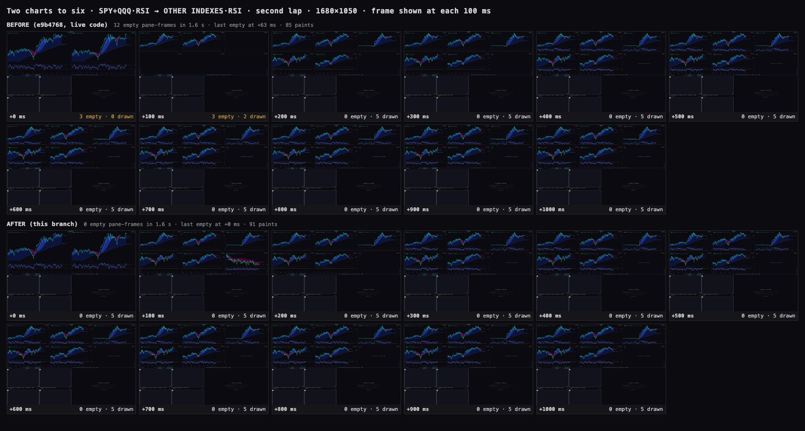
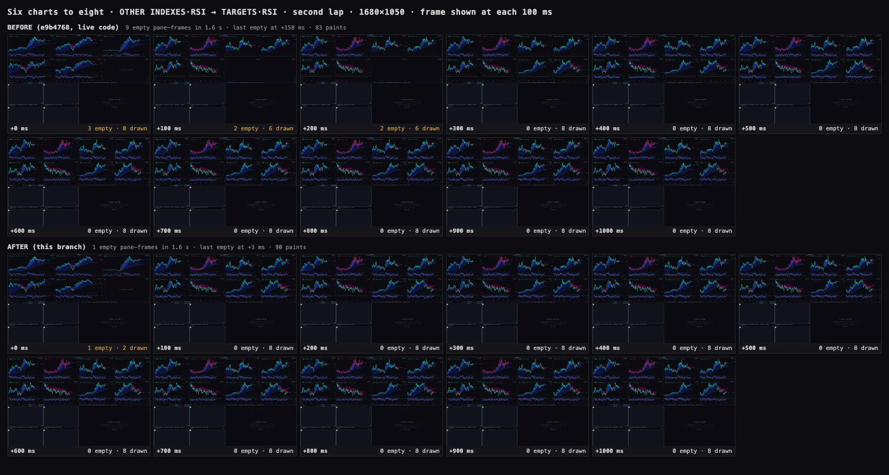
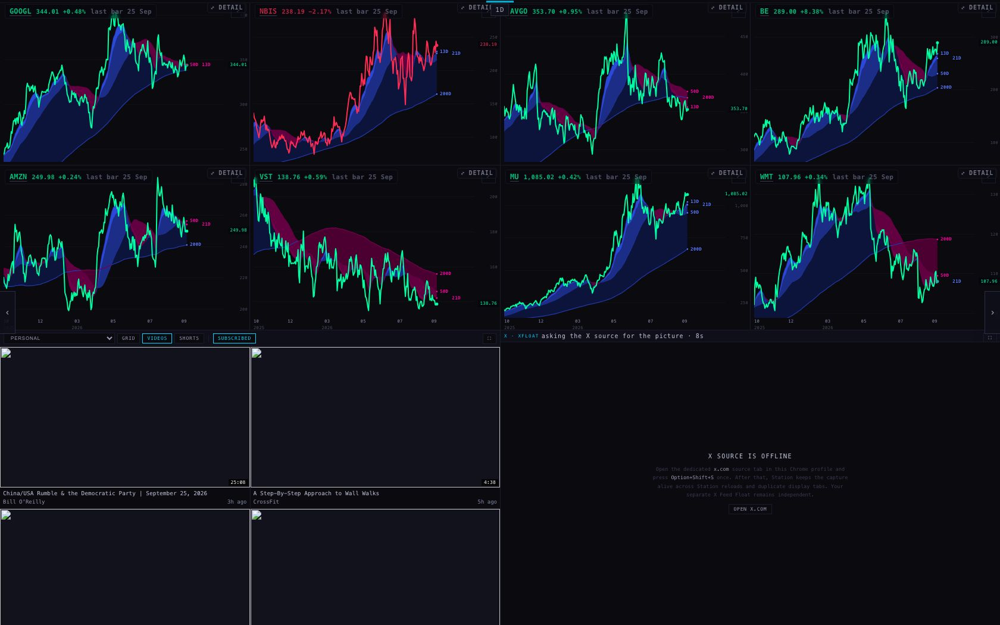
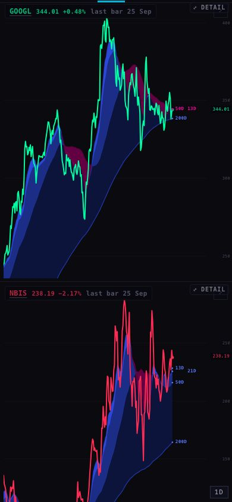
2 · A BARE CHART PANE FOR THE HUB
The Hub's company CHART tab shows the Station chart inside a frame. Inside that frame the chart had its own header strip: ticker box, eleven range buttons, a clouds button and TradingView. The Hub already has its own timeframe row (1h 4h 1D 3D 1W) above the frame, so the strip was clutter.
The address the Hub should use (a change of one line in the Hub's coChartSrc; I did not touch the Hub):
https://station.scintillahub.ai/chart/?bare=hub&t=NVDA&range=1D&clouds=1
with t = the company, range = the Hub's timeframe row (1h, 4h, 1D, 3D or 1W), and &rsi=1 added when the Hub turns
on its RSI switch (CO_CHART_RSI). In the Hub's code that is
STATION_CHART_URL + "?bare=hub&t=" + … in place of STATION_CHART_URL + "?t=" + ….
What bare=hub keeps: the badge (ticker, price, day change, and the new last-bar stamp); its own price refresh every 10 seconds, because
nobody else feeds it prices on the Hub; clouds, RSI and the timeframe from the address; and the Hub's own RANGE row, which is outside the frame and drives it.
What it drops: the header strip (ticker box, range buttons, clouds button, TradingView). Clicking the ticker no longer opens an editor, because on the Hub the
company chooses the symbol. It never sends messages to the page around it, and it saves no settings in the browser (only the price cache the chart always keeps).
A side benefit I measured: with the Hub's current address, the chart first asks the page around it for permission to load, waits out a 5.5-second
timeout because the Hub never answers, and only then fetches the clouds. At 8 seconds the "before" pane below still had no clouds, and that was also true on the untouched live code.
bare=hub skips that wait, so the clouds are there at once.
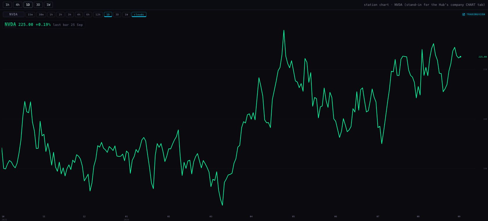
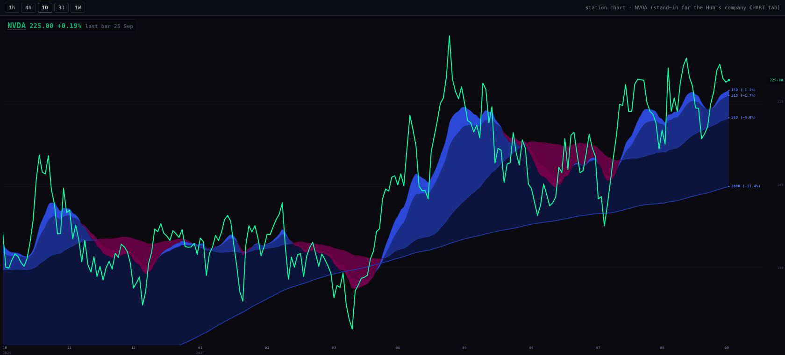
?bare=hub. Only the Hub's row, then the chart. The badge reads "NVDA 225.00 +0.19% last bar 25 Sep", and the cloud ribbon and its 13D/21D/50D/200D labels are drawn.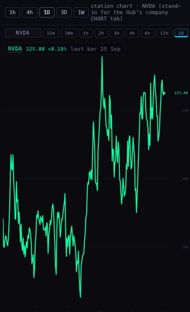
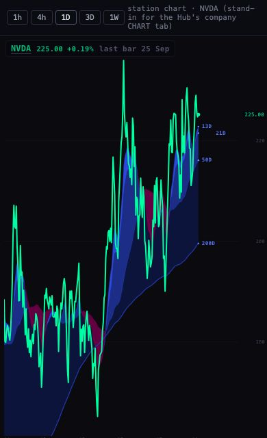
The Hub here is a stand-in page I served from a second local address, so the chart ran as a cross-site frame, as it does on scintillahub.ai. It is not the Hub.
3 · SAVE AS RADAR ALSO LIKES THE NAMES
The Hub's RADAR tab shows names that are both liked and on radar. A name saved to radar from SCRATCH that had never been liked didn't show. SAVE AS RADAR now does both. It adds the names to radar as before, then likes every saved name that isn't liked yet. Like the radar save, it only adds: a name already liked is left exactly as it was, and nothing on the Station ever unlikes.
The table, read first (read-only): public.hub_favorites has three columns: ticker, added_at (filled by the
database) and owner_id. It had 72 rows, all under the Hub's one shared owner 00000000-0000-0000-0000-000000000000.
That is the owner the Hub's own ♥ button writes (its operator-write function, unique on ticker + owner).
What the button sent when I saved NVDA, LRCX and ZETA from SCRATCH (the harness answered both writes; nothing reached the live table):
| write | body |
|---|---|
POST station_lists?on_conflict=list,position | [{list:"radar",position:1,ticker:"NVDA"}, {…2,"LRCX"}, {…3,"ZETA"}] (as before) |
POST hub_favorites?on_conflict=ticker,owner_idPrefer: resolution=ignore-duplicates | [{"ticker":"ZETA","owner_id":"00000000-0000-0000-0000-000000000000"}]. Only ZETA, because the live list already liked NVDA and LRCX. |
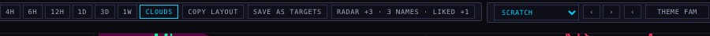
If the table refuses a direct write from the Station's public key, the Station falls back to the Hub's own ♥ path (operator-write, action
fav_add), one name at a time, which writes the same row.
4 · A STALE CHART LOOKS STALE
"It's not very easy for me to tell that something is not current… you have to be really, really careful." (Alan)
Every chart pane now has a small grey stamp after the price: last bar 15:00 ET on intraday charts (with the day if it isn't today),
last bar 25 Sep on daily, 3-day and weekly. During market hours, if the line has stopped, the stamp turns amber and adds its age:
- Intraday (15m … 12h): amber when the newest bar began more than two bars ago, plus up to 15 minutes' grace for the data to arrive. Only trading time counts (weekdays 04:00–20:00 ET, the hours these bars cover), so a Friday bar doesn't look stale at 04:30 Monday just because of the weekend. It does go amber at 06:30 Monday if Monday's pre-market bars haven't arrived.
- Daily: from 09:45 ET, amber if the line doesn't reach the previous session. Note: the brief said "the daily bar is not today's". Our daily bar is a finished session, so today's bar only exists after the close. I checked: the chart API took today's daily bar at 17:48 ET. Under the brief's wording, every daily chart would be amber all day, every day. So the rule is "the newest bar must be yesterday's (the last finished session)". See decision 1.
- 3-day and weekly: amber when more than two bars' worth of sessions are missing (six and ten sessions).
- Nights, weekends and NYSE holidays are never judged (holidays come from the calendar already in
provider.js, 2026–2027).
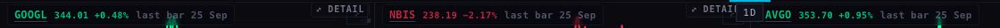
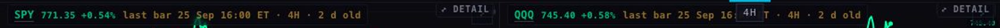
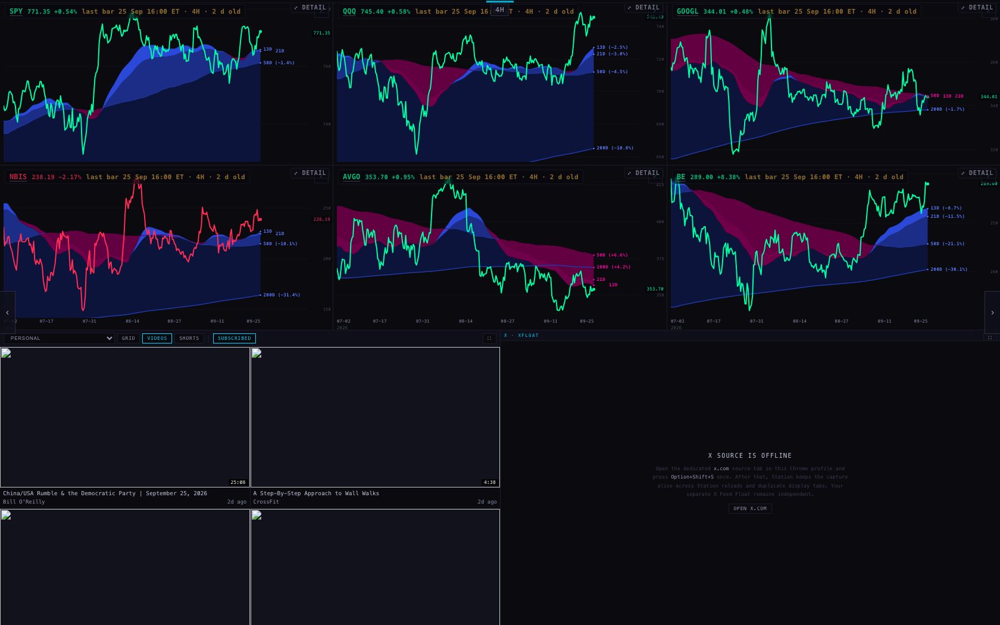
WHERE EACH NUMBER COMES FROM
- Chart prices and bars: the chart API
scintilla-massive-chart-api.fly.dev. It only answersscintillahub.ai, so the harness asked it from outside the browser with that origin and handed the answers to the page (the same answers for before and after). - Targets, radar list and liked list: the live database, read-only. Every write the Station tried went to the harness and was logged. None reached the live database.
- Frame counts: the harness's per-frame probe; pictures from Chrome's screencast (the picture on screen at each 100 ms mark).
- Test suite:
node --test tests/. 706 tests, 18 failing. Those are the same 18 that fail on the live code (e9b4768, run the same way). There are 41 more tests than on the live code, among them 12 for the stale stamp and 17 for items 1–3.
The 18 failures that already fail on the live code
- Personal subscriptions and the shared Scintilla discovery feed stay correctly scoped
- Station admits at most two visible chart requests and discards stale generation retries
- every served non-HTML file is inventoried — explicitly or by class, never silently
- every served surface appears in the inventory
- iPad header actions are single-activation controls with honest disabled state
- personal-video-v1: on air says LIVE, still to come says when
- personal-video-v1: the age is on the channel line, right-aligned into the empty space
- personal-video-v1: the label keeps up with the clock, on the pass that already runs
- reverse detection can actually see a retired standalone page
- scintilla-video-v1: on air says LIVE, still to come says when
- scintilla-video-v1: the age is on the channel line, right-aligned into the empty space
- scintilla-video-v1: the label keeps up with the clock, on the pass that already runs
- the dependency inventory states the counts it was generated against
- the inventory states the count it was generated against
- the pane's direction color is claimed from the day's baseline, or not claimed at all
- the standalone HTML files Vercel serves are inventoried too
- the visible chart badge reports an approximate span and actual start date
- video auto-next silently advances the next visible item and skips an unavailable embed
WHAT COULD BE WRONG
- Hidden frames cost a little. On the desk, up to six hidden charts keep their once-a-minute history refresh running. That is fewer requests than reloading them on every page change, but it isn't zero.
- Anyone allowed to write
hub_favorites? I made no live write, so I can't say whether the Station's public key may add rows. If it can't, the Hub's own ♥ path is used. If both fail, the button says "LIKE FAILED". - The stamp and the timeframe chip. On a three-across page the Station's centre timeframe chip can cover part of the middle chart's stamp when the stamp is long (the amber case).
- Half-day sessions (day after Thanksgiving, Christmas Eve) are treated as full days, and the holiday list runs to the end of 2027.
- The stale screenshot used a set clock (Monday 10:00 ET) over real Friday bars. Tonight's real screen is the grey one.
- Test browsers were headless. YouTube thumbnails and X are blocked in the harness, which is why the video panes are blank in the desk shots.
WHAT I DID NOT DO
- No push, no deploy, no database write, no Hub change. The Hub address change in section 2 is for the coordinator.
- The 33-second pages and the night-lap weeklies were not touched.
- I didn't move the timeframe chip, and I didn't add an unfinished "today" bar to the daily chart.
- The frame harness from the modes lane was never committed, so I built a new one on the same method. It is in
harness/next to this page.
DECISIONS FOR ALAN
- Daily stamp rule. Amber from 09:45 when the daily line doesn't reach yesterday, because today's bar can't exist until the close. Recommendation: keep it. The other choice is an unfinished "today" bar on daily charts, which is a bigger change to what the chart draws.
- Switch the Hub to
?bare=hub. One line in the Hub. Recommendation: yes. It's cleaner, and the clouds appear at once instead of after a 5.5 s wait. - The timeframe chip over the middle stamp. Recommendation: move the chip into the dock in a later polish pass rather than shorten the stamp.